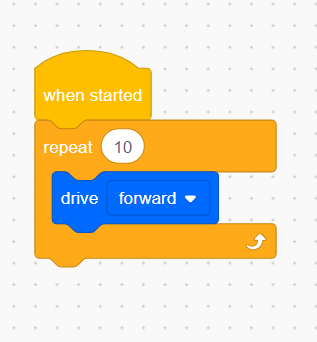

What You Should Know - VEX GO: A Day in My Ecosystem
 Important Vocabulary
Important Vocabulary
- Ecosystem - a community of interacting organisms and their environment
- Programming - writing a set of instructions for the computer or another machine to process and complete
- Block Programming - a type of programming that uses blocks to represent lines of command
- Habitat - the natural home or environment of an animal, plant, or other organism
- Adaptations - a change or the process of change by which an organism or species becomes better suited to its environment
- Loops - an easy way to tell the computer to repeat an action without writing another line of code
- Sequence - completing a series of steps in a certain order
- Variables - "containers" that hold information that you can change
Ecosystems
An ecosystem is a community of interacting organisms and their environment. There are many different ecosystems that an animal can live in.


Types of Ecosystems
There are two major categories of ecosystem types: terrestrial ecosystems and aquatic ecosystems.
Terrestrial Ecosystems
Terrestrial ecosystems are ecosystems found on land. There are eight kinds of terrestrial ecosystems.
Temperate Forest
Temperate forests have a wide variety of plants and animals, large trees, and plenty of precipitation.
Boreal Forest
Boreal forests have short summers and very long winters. They are covered with evergreen trees. The animals that live there are usually covered with thick fur. Why do you think that is?
Tropical Rainforest
Tropical rainforests have heavy rainfall, a warm climate, and lots of tall trees. They also have the largest biodiversity. This means they are home to millions of species of living things.
Savanna
Savanna ecosystems have open areas with trees and grasses scattered throughout. They have a dry and warm climate with lots of grasses, bushes, and trees.
Mountain
Mountains have a dry and harsh climate. They are found at high altitudes. Mountains are a primary source of freshwater. Can you learn why that is? Freshwater is important to keep the plants and animals in the mountain ecosystem alive.
Grasslands
Grasslands have grasses, shrubs, and trees, which are perfect for grazing animals. They have limited rainfall each year so they have a dry climate. Fires are common and the soil doesn’t have a ton of nutrients.
Tundra
Tundra ecosystems have long winters and short summers. They have extremely cold temperatures, very little vegetation, low precipitation (rain, snow, etc.), and a dry climate.
Desert
Deserts have very high temperatures and lots of sunshine. They are very dry. There are not a lot of animals found here. It is difficult to survive in a desert. What adaptations help desert animals survive?
Aquatic Ecosystems
Aquatic ecosystems are found in bodies of water. There are two types of aquatic ecosystems: marine and freshwater.
Marine
This ecosystem supports a large biodiversity. Water is the main component which contains many nutrients and salt. The average temperature of the water is 30 degrees Fahrenheit.
Freshwater
Freshwater ecosystem includes ponds, lakes, rivers, and wetlands. It is home to various fishes, amphibians, reptiles, etc.
Animal Adaptation
An adaptation is a special skill that helps an animal survive in its ecosystem. Adaptations can be physical changes to the body or behavioral changes in how an animal acts. For example, chameleons can change the color of their body to blend in with what's around them.
Do you think animals have to learn or develop new adaptations often? Why or why not?

What is Block Programming?
Block programming is a different way to program that is helpful for beginner programmers. You will use the drag and drop method to connect blocks which then will tell your character, or in this case your animal, what to do.
Code Blocks
You will use the code blocks to create a sequence of commands. It's important that the commands in your sequence are in the right order. There are three types of code blocks you will likely use: loops, events, and variables.
Using loops is an easy way to tell your robot, or a computer, to repeat a command more than once.

Events are actions that cause something to happen in your program. For example, you can program your robot to begin when the "Start" button is pressed. Pressing the Start button is an event that starts your program.

Variables are "containers" that hold information that you can change. Variables can hold numbers, fractions, and words or phrases.

Career Connections
Computer Programmer
Did you know that many people program things for a living? Computer programmers write and test code that allows computer applications (such as Google Chrome or Safari) and software programs (such as Adobe Photoshop or iMovie) to function properly. Check out how humans program computers, tablets and robots to do what we want them to do. Watch this video to learn more about what computer programmers do.

Ecologist
There are many people who study the relationships between living things and their environment. These people are called ecologists. Ecologists can be teachers or researchers. Ecologists can work at zoos, museums, aquariums for organizations or for the government. Watch this video to learn more about what ecologists do.